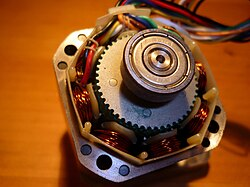

Qué es FDM/FFF
FDM significa modelado por deposición fundida. FFF significa fabricación por filamento fundido. En la práctica se usan casi como sinónimos: la impresora empuja un filamento termoplástico hacia un hotend, lo funde, lo hace salir por una boquilla y va dibujando la pieza capa por capa.
La clave está en que cada capa se pega a la anterior cuando el plástico todavía está caliente. Por eso importan tanto la temperatura, la refrigeración, la altura de capa, la velocidad, el flujo y la orientación de la pieza.
Cómo funciona una impresión FDM
1. El slicer prepara el archivo
El modelo 3D se abre en un slicer como OrcaSlicer, PrusaSlicer, Cura o Bambu Studio. El slicer lo corta en capas y genera instrucciones G-code: movimientos, temperaturas, velocidades, ventilador, retracciones y cantidad de material.
2. La impresora calienta
La cama alcanza la temperatura de adhesión y el hotend llega a la temperatura de fusión del material. PLA suele imprimir más frío que PETG, ABS, ASA, nylon o policarbonato.
3. El extrusor empuja filamento
Un motor mueve engranajes que agarran el filamento. Si el agarre es malo, si el filamento patina o si hay demasiada presión en la boquilla, aparecen subextrusión, clics o atascos.
4. El movimiento dibuja capas
Los ejes colocan la boquilla en cada punto. Una mecánica floja produce ringing, ghosting, capas desplazadas, paredes onduladas o medidas inestables.
Ventajas y limitaciones
Ventajas
Es la tecnología más cómoda para empezar: máquinas relativamente baratas, consumibles fáciles de encontrar, piezas grandes, mantenimiento accesible y muchos materiales distintos. Sirve para prototipos, soportes, herramientas, piezas funcionales, carcasas, decoración y aprendizaje técnico.
Limitaciones
No todo sale perfecto de fábrica. Las capas se ven, las piezas pueden deformarse, algunos materiales absorben humedad, los soportes dejan marcas y la resistencia depende mucho de la orientación. Para piezas muy detalladas, resina suele dar mejor acabado.
Tipos de impresoras FDM
El tipo de máquina define cómo se mueven la cama y el cabezal. No significa que una sea automáticamente mejor que otra: depende de rigidez, firmware, calibración, materiales y calidad de montaje.
| Diseño | Qué significa | Ventaja principal | Qué vigilar |
|---|---|---|---|
| Bedslinger | La cama se mueve hacia delante y atrás en el eje Y. Es el diseño típico de muchas impresoras de entrada. | Precio bajo, montaje sencillo y mantenimiento fácil. | Las piezas altas pueden vibrar porque la cama mueve también la pieza. |
| Cartesiana | Usa ejes X, Y y Z separados de forma muy intuitiva. Cada movimiento corresponde a un eje claro. | Fácil de entender, reparar y calibrar. | Puede ser menos rápida si la estructura no es rígida. |
| CoreXY | El cabezal se mueve en XY mediante correas cruzadas y la cama suele moverse solo en Z. | Buena velocidad, buena rigidez y fácil de cerrar para ABS/ASA. | Correas, poleas y escuadra tienen que estar bien ajustadas. |
| Delta | Tres torres mueven brazos que posicionan el cabezal. No funciona como una cartesiana tradicional. | Movimientos rápidos y volumen alto vertical. | Calibración menos intuitiva y más sensible a geometría. |
| IDEX | Tiene dos cabezales independientes en el eje X. | Permite duplicar piezas, modo espejo o usar soportes solubles. | Más cara, más pesada y requiere buena alineación entre cabezales. |


Impresora abierta o cerrada
Una impresora abierta deja la mecánica a la vista. Es perfecta para aprender, tocar la máquina, limpiar la cama y trabajar con PLA, PETG o TPU. Una impresora cerrada mantiene mejor la temperatura alrededor de la pieza y reduce corrientes de aire, algo importante para ABS, ASA, PC o nylon.
Abierta
Más barata, más fácil de observar y más cómoda para mantenimiento. Es suficiente para la mayoría de usuarios si imprimen PLA, PETG y TPU.
Cerrada
Mejor para materiales técnicos, reduce warping y protege la impresión de corrientes. Debe tener ventilación razonable y electrónica protegida del calor excesivo.
Partes de una impresora FDM
La forma más fácil de entender una FDM es separarla por sistemas. Cuando aparece un fallo, normalmente pertenece a uno de ellos: extrusión, temperatura, adhesión, movimiento, ventilación o electrónica.
Extrusión
Extrusor, hotend, boquilla y PTFE. Si falla, aparecen clics, atascos, hilos, goteo o subextrusión.
Ver hotend y extrusorMovimiento
Ejes, correas, poleas, motores, guías, ruedas, husillos y rigidez. Aquí nacen layer shift, ghosting y Z wobble.
Ver movimientoCama y adhesión
Cama caliente, PEI, vidrio, G10, malla, autolevel, Z-offset, brim, skirt, raft y primera capa.
Ver primera capaRefrigeración
Ventilador del hotend, ventilador de capa, cooling duct, heat creep, overhangs, bridging y ruido.
Ver ventilaciónElectrónica
Placa, drivers, fuente, sensores, termistores, cartuchos, conectores, firmware, Marlin y Klipper.
Ver electrónicaEstructura
Marco, perfiles, escuadras, tornillería, mesa estable, cámara cerrada, paneles, puerta y filtros.
Ver rigidez| Parte | Función | Fallo típico | Síntoma |
|---|---|---|---|
| Hotend | Fundir filamento | Atasco o fuga | No extruye o gotea |
| Extrusor | Empujar filamento | Engranaje sucio | Clics o subextrusión |
| Boquilla | Depositar material | Desgaste o atasco | Líneas finas o mala calidad |
| Cama | Sujetar la pieza | Sucia o desnivelada | Mala primera capa |
| Correas | Mover ejes | Flojas | Capas desplazadas o ghosting |
| Ventilador hotend | Evitar heat creep | Parado o sucio | Atasco tras minutos |
| Ventilador capa | Enfriar pieza | Poco flujo | Malos puentes y overhangs |
| Fuente | Alimentar sistema | Conector flojo | Fallos eléctricos |
| Sensor nivelación | Medir cama | Offset incorrecto | Primera capa mala |
Hotend, boquilla y temperatura

El hotend es el conjunto que transforma filamento sólido en plástico fundido. La parte fría mantiene el filamento rígido antes de entrar en la zona caliente. La parte caliente lo funde justo antes de salir por la boquilla.
- Boquilla
- Pieza final por donde sale el plástico. 0,4 mm es el estándar. 0,6 mm da más flujo y piezas fuertes; 0,2 mm da más detalle pero imprime más lento.
- Heatbreak
- Separación térmica entre zona fría y caliente. Si no funciona bien puede aparecer heat creep y atascos.
- Bloque calefactor
- Bloque metálico que contiene cartucho calefactor y sensor de temperatura.
- Termistor o sensor
- Mide la temperatura. Si marca mal, el material puede imprimir demasiado frío o demasiado caliente.
Extrusor: Bowden y direct drive
El extrusor no funde el plástico: lo empuja. La diferencia está en dónde está colocado respecto al hotend.
| Sistema | Qué es | Ventajas | Inconvenientes |
|---|---|---|---|
| Bowden | El extrusor está separado del hotend y manda el filamento por un tubo PTFE. | Cabezal más ligero, puede moverse rápido y reduce peso en el eje. | Más difícil con TPU, retracciones más largas y respuesta menos directa. |
| Direct drive | El extrusor va montado cerca del hotend. | Mejor control del filamento, ideal para flexibles y retracciones más cortas. | Cabezal más pesado si no está bien diseñado. |
Cama, superficie y primera capa
La cama es el sistema de adhesión. No sirve de nada tener un hotend perfecto si la primera capa queda demasiado alta, demasiado aplastada, sobre una superficie sucia o a temperatura incorrecta.
PEI texturizado
Muy habitual, cómodo y resistente. Funciona muy bien con PLA y PETG, pero PETG puede pegar demasiado si la superficie no es adecuada.
PEI liso
Deja base lisa y bonita. Exige limpieza más cuidadosa porque la grasa de los dedos se nota mucho.
Vidrio
Plano y barato, pero puede necesitar adhesivos y tarda más en calentar.
G10 / Garolite
Buena opción para nylon y algunos materiales técnicos, según superficie y temperatura.
- Z-offset alto: el filamento cae redondo, no se aplasta y se despega fácil.
- Z-offset bajo: la boquilla arrastra material, deja marcas o puede obstruirse.
- Cama sucia: la pieza no pega aunque los parámetros parezcan correctos.
- Cama fría: las esquinas se levantan, sobre todo en piezas grandes.
Movimiento, rigidez y precisión
El sistema de movimiento coloca la boquilla en cada coordenada. Si hay holguras, correas flojas, ruedas mal ajustadas o guías sucias, el slicer puede estar perfecto y aun así la pieza saldrá mal.


Ventilación, sensores y electrónica


La electrónica no mejora una mala mecánica, pero una buena electrónica permite funciones importantes: protección térmica, drivers silenciosos, sensores de filamento, autolevel, input shaping, pressure advance, Wi-Fi o control remoto.
Materiales habituales en FDM
| Material | Uso típico | Dificultad | Máquina recomendada |
|---|---|---|---|
| PLA | Aprendizaje, decoración, prototipos, piezas sin calor. | Fácil | Casi cualquier FDM con cama caliente. |
| PETG | Piezas funcionales, soportes, piezas algo flexibles y resistentes. | Media | Buena cama, retracción ajustada y filamento seco. |
| TPU | Piezas flexibles, protectores, juntas, absorción de vibración. | Media/alta | Direct drive recomendado y velocidades bajas. |
| ABS / ASA | Piezas resistentes a temperatura, exterior y uso técnico. | Alta | Impresora cerrada, ventilación y control de warping. |
| Nylon / PC | Piezas técnicas fuertes, resistentes y exigentes. | Alta | Hotend all-metal, cámara, secado serio y boquilla adecuada. |
Para elegir material con más detalle, usa la guía de materiales. En FDM, el material correcto suele importar más que subir la calidad visual del perfil.
Cómo elegir una impresora FDM
Para empezar
Busca cama PEI, autolevel fiable, buena comunidad, perfiles de slicer ya probados, repuestos fáciles y extrusor decente. No compres solo por velocidad máxima anunciada.
Para piezas funcionales
Prioriza rigidez, hotend capaz, cama estable, buen flujo volumétrico, posibilidad de boquillas de 0,6 mm y materiales como PETG, ASA, nylon o PC.
Para TPU
Direct drive, ruta de filamento corta y bien guiada, extrusor con buen agarre y perfiles lentos. Bowden puede hacerlo, pero cuesta más.
Para ABS/ASA
Cámara cerrada, ventilación, piezas alejadas de corrientes de aire, cama caliente potente y hotend all-metal. ASA es muy útil para exterior.
Mantenimiento básico
Una FDM bien mantenida imprime mejor aunque no sea cara. Muchos problemas que parecen de slicer vienen de suciedad, desgaste o pequeños desajustes mecánicos.
- Limpia la cama con el método adecuado para tu superficie.
- Revisa tensión de correas y holguras cada cierto tiempo.
- Limpia restos de filamento en boquilla, bloque y extrusor.
- Comprueba que los ventiladores giran sin ruido raro.
- Guarda el filamento seco, especialmente PETG, TPU, nylon y materiales técnicos.
- No ignores olores, cables calientes, conectores flojos o errores de temperatura.